13
What-If EMIR Analysis
- Overview
- ECO Commands Supported in Voltus-Fi-XL
- Performing What-If (ECO) Analysis in Voltus-Fi-XL
- Pre-Filling the Run Simulation Form
- Output
- Options for Performing What-If (ECO) Analysis
- Layout Modification Options
Overview
The What-If analysis feature lets you analyze the impact of potential layout changes, without implementing these changes in the layout, and re-extracting the xDSPF file. These changes are also called the ECO changes.
The What-If flow is supported in the regular “iterated” method EMIR flow, and in an incremental “itereco” method EMIR flow, which reuses the circuit simulation results from a previous iterated mode EMIR analysis. This is shown in the figure below.
The What-If changes are defined in an ECO file, which is included in the EMIR control file (emir.config). All ECO changes are relative to the original xDSPF content. In one What-If simulation, all changes defined in the ECO file are applied. These are then analyzed together in the second stage of the EMIR analysis.
Multiple incremental ECO runs are supported. For each run, the changes defined in the ECO file are applied to the original xDSPF content. Changes from previous ECO runs are not considered. In the incremental What-If analysis, only the nets with ECO changes are analyzed.
Other EMIR methods, such as “method=direct”, are not supported when performing What-If analysis.
All ECO changes for a specific What-If run are defined in one ECO file.
ECO Commands Supported in Voltus-Fi-XL
The following ECO commands are supported in Voltus-Fi-XL:
-
add_pin net=<net_name> name=[node1 node2 …] -
delete_pin net=<net_name> name=[node1 node2 …] -
add_cap net=<net_name> cap=[node1 cvalue1 node2 cvalue2 …] -
add_res net=<net_name> node=<node1 node2> r=<rvalue> -
delete_res net=<net_name> name=<resistor1 resistor2 …> -
scale_res net=<net_name> name=<resistor1 resistor2 ….> scale = <scalefactor> -
add_viawhen executed creates anadd_resentry in the ECO file -
delete_viawhen executed creates adelete_resentry in the ECO file
The parameters listed above are defined as follows:
-
net_name:name of the net as defined in thexDSPF |*netstatement. There is no support for wildcards, same as that in the xDSPF file. -
node1, node2:name of pin, sub, or tap node. There is no support for wild cards, same as that in the xDSPF file. -
cvalue1, cvalue2:the value of capacitance to be added. Negative value is supported for reducing net capacitance. It is a floating number. -
rvalue … value: value of resistance to be added. This is a floating number. -
resistor1, resistor2:the instance name of resistors to be deleted, or scaled. -
scalefactor:the scaling factor. This is a floating number.
An example ECO file (emir.eco) is as follows:
add_pin net=[VDD] name=[VDD#9]
delete_pin net=[bias1] name=[Rj3652]
scale_res net=[VDD] name=[Rg1 Rg2 Rg3 Rg4] scale=0.5
delete_res net=[VDD] name=[Rg5]
add_res net=[VDD] node=[VDD#80 VDD#81] r=10
add_cap net=[VDD] cap=[VDD#80 10e-15 VDD#81 5e-15]
Alternatively, all ECO commands can also be used with the prefix, eco_ in the emir.conf file directly. For example,
eco_add_pin net=[VDD] name=[VDD#9]
When performing a regular iterated method EMIR analyses with What-If, the only change required in the emir.conf file is the reference to the ECO file.
solver method=iterated
eco file=-”emir.eco”
The following lines need to be defined in the emir.conf file to enable an incremental What-If EMIR analysis.
solver method=itereco inputwf=”./input.emirtap.pwl"
eco file=”emir.eco”
Performing What-If (ECO) Analysis in Voltus-Fi-XL
The What-If flow in Voltus-Fi-XL GUI is as follows:
- ECO commands are specified in the Voltus-Fi-XL GUI and the ECO file is generated.
- Voltus-Fi-XL calls Spectre to perform the EMIR analysis. Fully accurate EMIR simulation is performed.
- Only nets that are changed in the ECO statement are changed.
To perform What-If analysis, first load the IR drop analysis results, select the net and click Show Plot. In the IR/EM Results form, the What-If (ECO) Analysis tab gets enabled. The software provides support in the form of tips about how to enable the What-If (ECO) tab when you hover over the tab name. This is shown below. It also provides help to fill out information in the various fields in the tab. This tooltip appears when you hover over the fields in the form.
Figure 13-2 Tooltips for What-If (ECO) Analysis Tab of the IR/EM Results Form
Figure 13-3 the IR/EM Results Form – What-If (ECO) Tab
In this form, provide the following information:
-
Select the nets on which you want to perform What-If (ECO) analysis. In the text field provided with the Select Nets field, enter the full net name. The text field also accepts regular expression. For example, if you enter
V*, the table will list all nets whose names start withV, for exampleVDDandVSS. -
From the whatif changes list, select the ECO command you want to run. The following commands are available:
-
add_pin -
delete_pin -
add_cap -
scale_res -
add_res -
delete_res -
add_via -
delete_viaFor each of the above options, there are some changes in the fields enabled in the form. For details, see Options for Performing What-If (ECO) Analysis.
-
In the Node name group box, provide the information for the node on which the What-If (ECO) analysis is to be performed.
- Select the Layer on which you want to perform the analysis from the list. By default, this field is populated with the name of the layer selected in the Display form. If multiple layers are selected in the Display form, all the layer names will appear in the list.
- Click Get Node and then select any point on the specified layer in the layout. The nearest node on the specified layer is identified for the whatif changes. The node name and its x- and y- coordinates are populated in the three text boxes; Name, X, and Y, respectively.
In the Recurrence group box, provide the following information:
-
Click Recurrence to add pins in recurrence in both horizontal and vertical directions. The starting point is the node that was specified using the Get Node button in the previous step. This option is applicable only when
add_pinECO command is selected. For this, perform the following tasks:- Specify dX, or delta-X, which is the horizontal spacing between the nodes that will be used for adding pins.
- Specify dY, or delta-Y, which is the vertical spacing between the nodes that will be used for adding pins.
-
Specify num, which is the number of nodes with the specified spacing, both horizontally and vertically.
When you click Recurrence, the Filters pop-up window opens. It displays a table with names of nodes that will be used for adding pins along with their x- and y- coordinates. When you click OK, the selected nodes will be used to add pins. This information is then populated in the table provided in the What-If (ECO) form. This is shown below.
Figure 13-4 Adding Multiple Pins for What-If (ECO) Analysis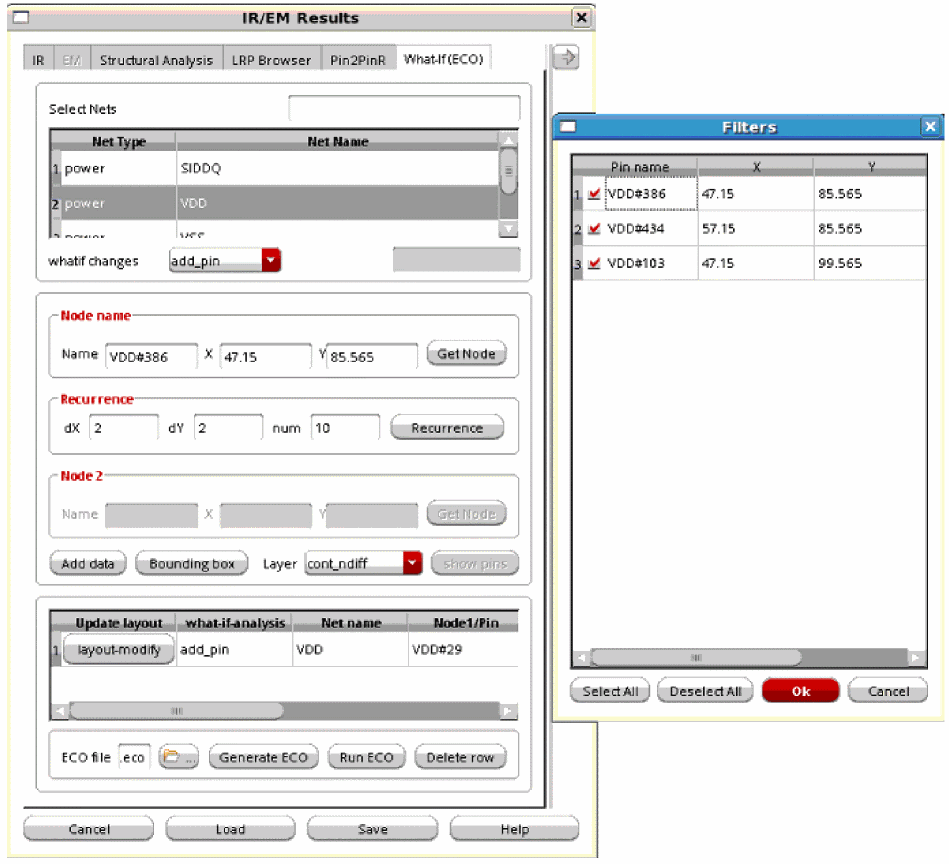
-
In the Node-2 group box, provide the same information as above for the second node. This field is only enabled when
add_resis specified in the whatif changes list. - Click Add data to add the location of the nodes in the table provided in the form. You can add multiple pairs of co-ordinates in the table. The table provides information about the type of What-If (ECO) analysis, the net name, information about the nodes, and the analysis data.
- Click layout-modify to modify the layout of the ECO commands. The button lets you modify the layout for the specified ECO command. For details, see Layout Modification Options.
- Specify the Layer on which you want to create the bounding box.
-
Click Bounding box and then select an area on the Virtuoso layout. Depending on the what-if analysis type, nodes and resistors will be selected from the layout. For example, if
delete_resECO command is selected in the whatif changes list, resistors will be selected for deletion. The nodes and resistors are selected on the basis of the specified layer name. These nodes will be listed in the Filters pop-up window. When you click OK, all the selected nodes will be used for deleting resistors. Ifadd_pincommand is selected in the whatif changes list, then all nodes inside the rectangle, for the specified layer, will be selected. These nodes will be listed in the Filters pop-up window. When you click OK, all the selected nodes will be used for adding pins. Their names and the corresponding net names will be added in the table in the What-If (ECO) form.The Bounding Box can only be used whenFigure 13-5 Using the Bounding Box Option to Add Pinsadd_pin,add_cap,delete_res, andscale_resECO commands are selected in the whatif changes list. An example of using the Bounding Box for adding pins is shown below.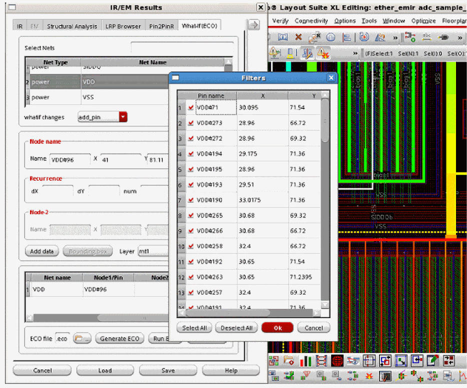 - Specify the path and name of the ECO file to be generated in the ECO file field.
- Click Delete row to delete the data added in the table. For this, first select the row for which you want to delete the data and then click Delete row.
-
Click Generate ECO to generate the ECO file with the specified filename in the specified directory. The file opens in a pop-up window. A sample ECO file is shown below.
Figure 13-6 Sample ECO File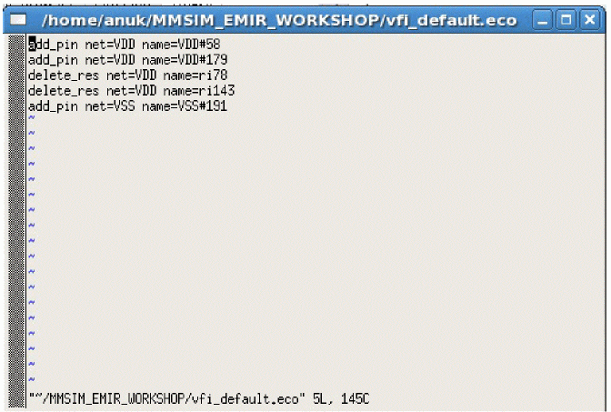 -
Click Run ECO to run the simulation with the specified What-If ECO changes. When you click Run ECO, the Run Simulation form opens. The fields in this form are filled in automatically with information from the Spectre run. For details of how the form is pre-filled by the software, see Pre-Filling the Run Simulation Form.
In this form, check all the pre-filled information to ensure that it is correct. This form is shown below.
Figure 13-7 The Run Simulation Form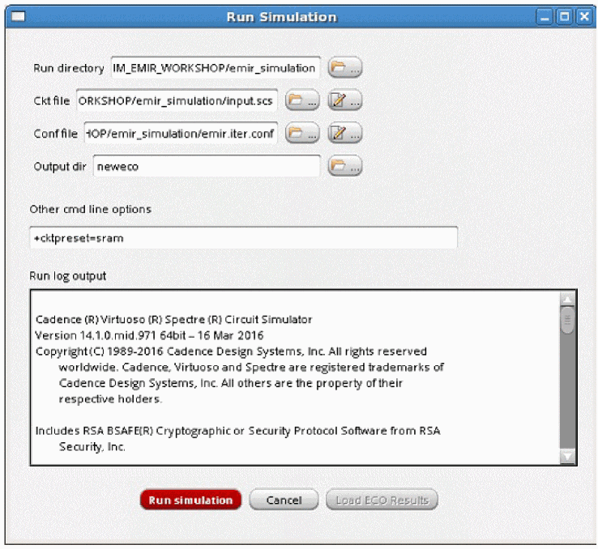In this form, the following information is pre-filled:- The name of the simulation Run directory
- The name of the input Ckt file
-
The name of the simulation configuration file in the Conf file field
- The path of the output directory for the What-If Spectre run in the Output dir field, and
-
The Spectre command line parameters in the Other cmd line options field, for example, if Spectre XPS is used, then
+spice+xpsand+cktpreset=sramis specified and if Spectre APS is used, then+spice+apsand+cktpreset=sramis specifiedFor details of command line options, see “Postlayout Simulation” chapter in the Spectre Circuit Simulator and Accelerated Parallel Simulator User Guide. -
Click Run Simulation. Once the simulation run is complete, you will get a pop-up telling you that the run is successful. The details of the run are provided in the Run log output.
Errors, if any, are written in the log. You can fix the errors and run the simulation again. -
Once the simulation run is complete, the Load ECO Results button is enabled. This button is used to load the simulation results file that includes the What-if ECO changes. When you click this button, the Run Simulation form closes and the IR tab of the IR/EM Results form opens. In this tab, the new results file is loaded, which includes information about only those nets for which what-if ECO changes have been made.
You can now generate IR/EM plots as per the changes made in ECO simulation.This is shown below.
Figure 13-8 IR/EM Results Form – Results File with What-If ECO Changes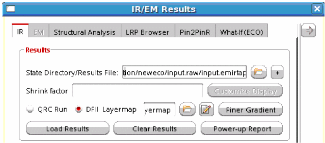
Pre-Filling the Run Simulation Form
The Run Simulation form that opens when you click the Run ECO button in the What-If (ECO) analysis tab, is pre-filled with information that is already available from the Spectre run. To ensure that the form is pre-filled, the following information must be available:
- The emir bin file that contains the simulation results from the original Spectre run
- The configuration file generated during the original Spectre run
- The log file generated during the original Spectre run
The software performs below steps to extract the data from the original Spectre run for pre-filling the Run Simulation form.
-
The software locates the log file generated by Spectre. The “
xps.log” or the “aps.log” file is located either in the same directory as the emir bin file or in the parent directory of the emir bin file. -
The software parses the "
.log" file and searches for the "command line" used in the original Spectre run. The command line contains the "ckt file" and "command line options" used in the original Spectre run. -
It then creates a directory parallel to the directory containing the "ckt file" for the What-If Spectre run. The new directory is created with the name, "
whatIfRunDir". This will contain the output of the What-If Spectre run. -
The software searches for the “conf” file generated after the original Spectre run in the emir bin file directory and then creates a new "conf" file for the What-If spectre run, in the directory "
whatIfRunDir" and performs the following tasks in the newly created "conf" file:
Now, when you click Run Simulation, the simulation runs using the above newly-generated conf file that includes information about the ECO options.
Access to this video will depend on the availability of a web browser and a Cadence Online Support account.
Output
The output of the above simulation run with ECO changes is a simulation database (*.emir#_bin). You can use this simulation database for running the EMIR analysis.
For this, load this simulation database—with ECO changes—when loading the IR drop analysis results on the IR tab of the IR/EM Results form.
The subsequent EMIR analysis will be performed using this simulation database.
Options for Performing What-If (ECO) Analysis
When you select the ECO command that you want to run in the whatif changes list, there are some changes in the other options on the What-If (ECO) tab. These are detailed below.
-
For
add_pin, the following flows are supported for What-If (ECO) analysis:- You can select a node by retrieving the x- and y- coordinates information in the layout. This node will be used for adding pins.
- You can add multiple nodes at specified distances from an identified node at once by using the Recurrence option provided in the What-If (ECO) Analysis form. These nodes are used to add pins.
- You can create a bounding box in the layout for a specified layer. All nodes within the bounding box or the rectangle will be used to add pins.
The fields on the What-If (ECO) tab are the same as described above and shown in Figure 13-3. For details, see Performing What-If (ECO) Analysis in Voltus-Fi-XL. -
For
delete_pin, the following options are available in the What-If (ECO) Analysis form:- The Node name group box is replaced with the Pin name group box. This is shown below.
-
The show pins button is enabled. Click this button to view the list of pins on the selected layer. The Filters pop-up opens. The pin name and the x- and y- coordinates of the pin are provided in the pop-up. Select the row and click OK. The pin name and its coordinates appear in the table. This is shown below.
Figure 13-9 Options for delete_pin What-If (ECO) Analysis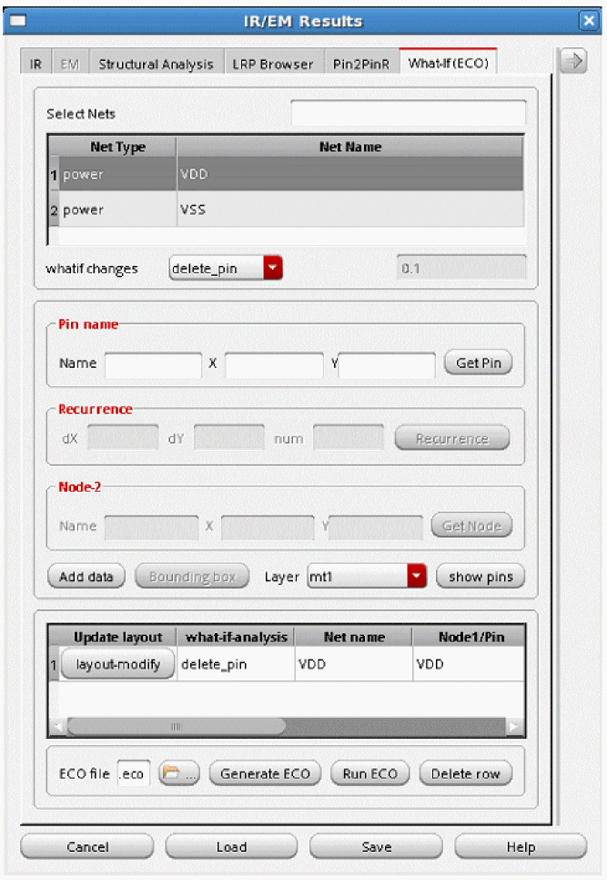Figure 13-10 The Filters Pop-Up Window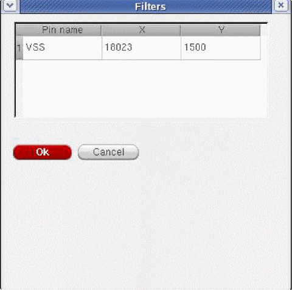
-
For
add_cap, the following options are available in the What-If (ECO) form: -
For
scale_res, the following options are available in the What-If (ECO) form: -
For
add_res, the following options are available in the What-If (ECO) form: -
For
delete_res, the following options are available in the What-If (ECO) form: -
For
add_via, the following options are available in the What-If (ECO) form:- The Node name group boxes are replaced with the Via-node- and Via-node-2 group boxes. Provide the Res value (Ohm) information.
The two via nodes that are specified must be on different layers.
Figure 13-15 Options for add_via What-If (ECO) Analysis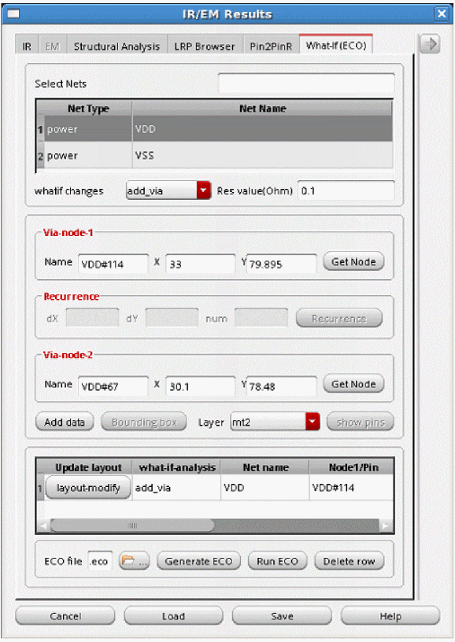 -
For
delete_via, the following options are available in the What-If (ECO) form:
Via layer must be selected in the Layer box.
Figure 13-16 Options for delete_via What-If (ECO) Analysis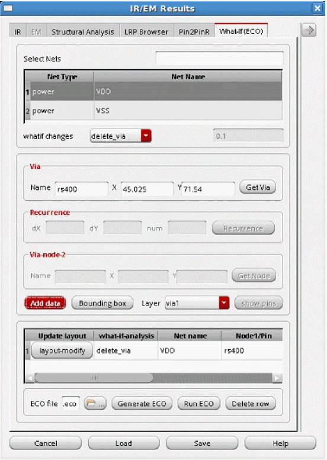
Layout Modification Options
Voltus-Fi-XL provides options to modify the layout for the specified ECO command in the GUI mode. For this, layout-modify button is provided on the What-If (ECO) tab of the IR/EM Results form. This feature lets you view the layout modifications after adding and deleting pins, resistors, and vias.You can also perform design-rule checks (DRCs) and view the design-rule violations (DRVs) in the layout after performing these actions.
The following topics are covered in this section:
- Adding Pins and Modifying the Layout
- Deleting Pins and Modifying the Layout
- Adding Resistors and Modifying the Layout
- Deleting Resistors and Modifying the Layout
- Adding Vias and Modifying the Layout
- Deleting Vias and Modifying the Layout
- Design Rule Checking
Adding Pins and Modifying the Layout
On the What-If (ECO) tab of the IR/EM Results form, perform these steps to add a pin and modify the layout:
- Select add_pin ECO command from the Whatif changes list.
- Click Get Node and then click anywhere on the Virtuoso layout to get a sub-node on the net.
-
Click Add data to add the ECO command,
add_pinin the table. -
Click the layout-modify button provided in the table to add the pin in the layout. The default pin shape is
0.1uX0.1u.
Figure 13-17 Adding a Pin and Modifying the Layout – Step 1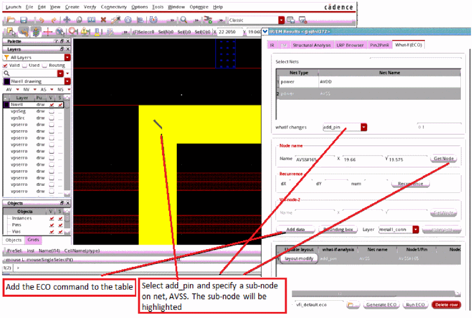Figure 13-18 Adding a Pin and Modifying the Layout – Step 2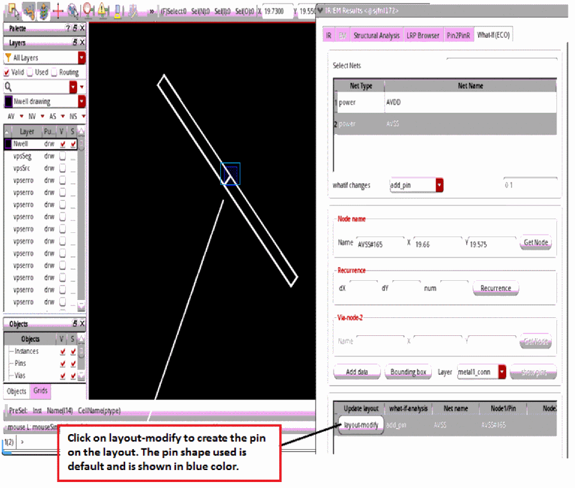
Deleting Pins and Modifying the Layout
Follow these steps to delete a pin and modify the layout:
- Select delete_pin ECO command from the Whatif changes list.
-
Click show pins to view the list of pins. Select the pin you want to delete. The
delete_pinECO command is added in the table. - Click layout-modify to delete the pin in the layout.
Adding Resistors and Modifying the Layout
Follow these steps to add a resistor and modify the layout:
- Select add_res ECO command from the Whatif changes list.
- Select a metal layer from the Node layer group box and get the Node 1 and Node 2 information from the layout. Both nodes should be on the same layer.
- Specify the Res value (ohm).
-
Click Add data to add the ECO command,
add_resin the table. -
Click layout-modify to add the resistor in the layout. The new resistor created in the layout will have a default wire width of
0.1u.
Figure 13-19 Adding a Resistor and Modifying the Layout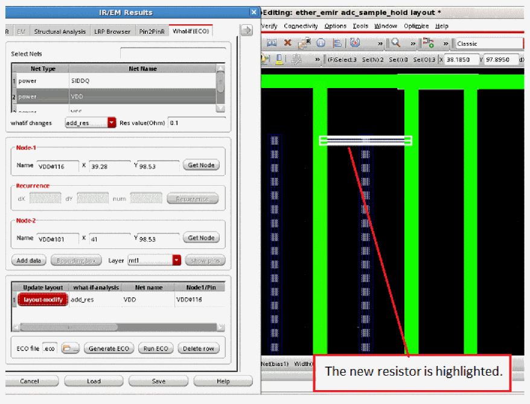
Deleting Resistors and Modifying the Layout
Follow these steps to delete an MMSIM/Spectre resistor and modify the layout:
- Select delete_res ECO command from the Whatif changes list.
- Select a metal layer and get the resistor information from the layout.
-
Click Add data to add the ECO command,
delete_resin the table. -
Click layout-modify to delete the resistor from the layout. Design rule violations (DRVs) will be checked after modifying the shape.
Figure 13-20 Deleting a Resistor and Checking the DRVs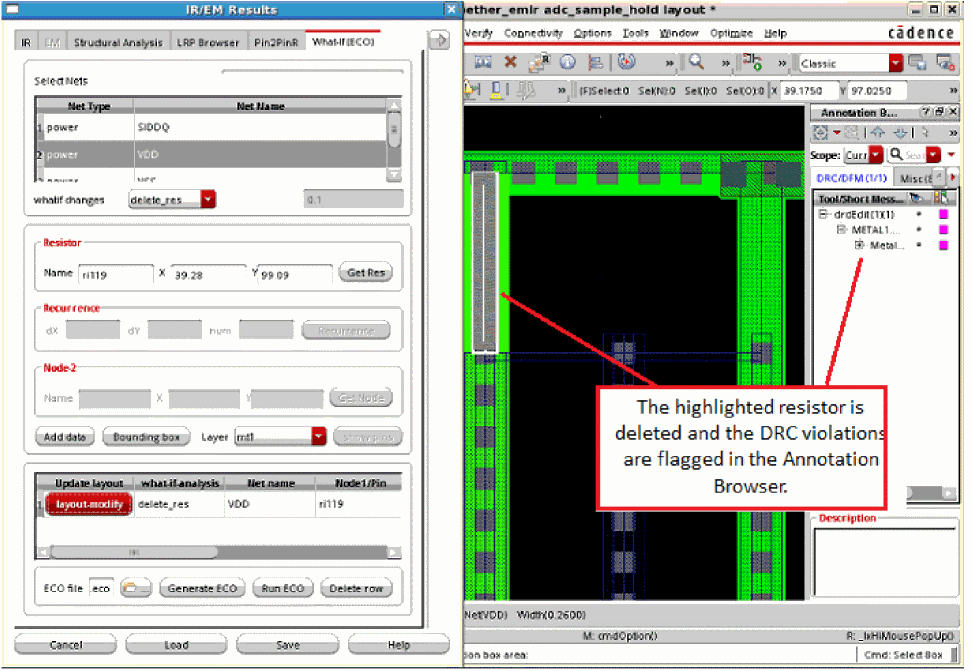
Adding Vias and Modifying the Layout
Follow these steps to add a via and modify the layout:
- Select add_via ECO command from the Whatif changes list.
- Select a metal layer and select Node 1 from the layout.
- Select another layer and select Node 2 from the layout.
- Click Add data to add the via in the layout. The software searches for existing via definition (viaDef) in the technology file based on the via layers selected by you. The following scenarios are possible.
- The generated via has the following default values:
Deleting Vias and Modifying the Layout
Follow these steps to delete a via and modify the layout:
- Select delete_via ECO command from the Whatif changes list.
- Select a via layer and select a via from the layout.
-
Click Add data to add the ECO command,
delete_viain the table. - Click layout-modify to delete the via from the layout.
Design Rule Checking
Design rules are checked during layout modifications. Virtuoso XL DRD (Design-Rule-Driven) editing is automatically turned ON by Voltus-Fi while performing the layout modifications. The violations can be viewed in Annotation Browser and the layout window.
The figure below shows the DRVs post layout modifications after deleting a via.
Figure 13-22 Checking DRVs after Deleting a Via
Return to top